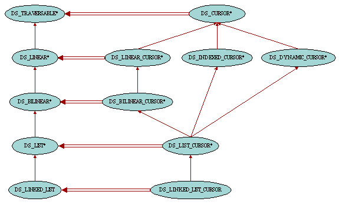

| Traversable Containers |

Data structures such as lists may want to provide their clients with a way to access and traverse their elements. This notion of traversal mechanism seems to be simple to design: one just has to add, using inheritance, the traversal operation features to the traversable container interfaces. However some data structures might have different traversal policies. For example, a tree structure might be traversed in preorder, postorder or breadth-first depending on its clients' needs. Including the operations for such different traversals in the data structures' class interface is hardly possible for two reasons: the class interface will rapidly be too complex, making more important features difficult to spot; and one cannot anticipate all possible traversal policies relevant to all clients of a data structure. Another important facility to take into account is to allow a data structure to be traversed more than once at the same time.
The use of the iterator pattern as described in Design Patterns solves the concerns expressed above. The key idea of this pattern is to take the responsibility for access and traversal out of the data structure and put it into an external cursor object. This way, it is very straightforward to traverse the same data structure at once: each cursor just has to keep track of its own traversal state. Moreover the traversal algorithm being held in cursors, it is very easy to switch from one traversal policy to another for a given data structure just by using a different kind of cursor.
However, programmers used to EiffelBase traversal mechanism sometimes prefer to have the iteration features included in the container class interface itself rather than having to create an external cursor object. This technique may indeed be just fine in many cases provided that the container is not traversed more than once simultaneously since there is only one internal cursor position in the data structure. For this reason the Gobo Eiffel Structure Library supports both internal and external cursor mechanisms.
Typically, traversable structures are heirs of class DS_TRAVERSABLE. In the external cursor pattern, this class is only responsible for providing its clients with new cursors (instances of class DS_CURSOR). This is achieved through feature new_cursor. Traversable structures are also equipped with the boolean-valued query valid_cursor providing a means to check whether a given external cursor can be used to traverse the current container. Cursors supplied by one data structure cannot be used to traverse another structure, even if the structures are of the same type. This is enforced by the fact that each cursor knows about the structure it is traversing. Apart from this container reference, class DS_CURSOR has a boolean-valued query off stating whether there is an element at the current cursor position, and item returning this element. Also useful are the two features same_position and go_to which respectively checks whether two cursors point to the same position in the container and moves the cursor to another cursor's position.
In the internal cursor pattern, all features from class DS_CURSOR are also available in class DS_TRAVERSABLE, the only difference being that feature item has been named item_for_iteration to avoid name clashes in descendant classes with feature item from DS_INDEXABLE.
Cursor objects are valid at any time during their existance. This means that they should be kept synchronized with their data structure, especially when the container is modified. For example a cursor pointing to an item which has been removed from the container won't be valid any more and should be resynchronized. It is the responsibility of the procedure that alters the container to keep the cursors (both internal and external) valid in a deterministic way. Each such procedure in descendant classes of DS_TRAVERSABLE will take the most appropriate action as possible and document it in its header comment. For example in lists, adding new items will not move the cursors currently traversing the container, but removing an item from the list will move any cursor which was at this position to its next position. So in order to know what will happen to cursors when altering a container, just check the header comment of the corresponding procedure first.
Linear structures are containers which can be traversed in a linear way, that is the traversal starts from one of its item and then sequencially moves to the next items until all items have been visited. Unless the data structure is an ordered container, two subsequent iterations may not traverse the items in the same order. An example of containers where items are traversed in a predictable order is list. Hash table on the other hand is an example of linear container which is not ordered since items will be inserted in the container depending on hash codes and table size and the order can change when the hash table is resized.
The features that are introduced in classes DS_LINEAR and DS_LINEAR_CURSOR are start to initiate the traversal, forth to move to the next item, after to indicate that all items have been visited, is_first to indicate whether the cursor is on the first item of the traversal and go_after to abort the traversal and move the cursor after the last item. Also of interest is the feature search_forth which moves the cursor to the next occurrence of an item according to the searchable mechanism criteria. Following is a typical example of a linear traversal:
a_cursor := a_linear.new_cursor
from a_cursor.start until a_cursor.after loop
do_something (a_cursor.item)
a_cursor.forth
end
Here is another straightforward example:
a_cursor := a_linear.new_cursor
from a_cursor.start until a_cursor.after loop
if a_cursor.item = 5 then
found := True
a_cursor.go_after
else
a_cursor.forth
end
end
Note that the examples above also work fine when the container is empty. This is because the feature start moves the cursor after when there is no items, hence exiting from the loop before the first iteration.
We saw in the previous section that it was the responsibility of the container to keep up-to-date the cursors currently traversing its items. This implies that the container internally keeps track of such cursors. Therefore, after a traversal and/or when the cursor is not needed anymore, it is important to give a clue to the container that it doesn't need to take care of this cursor anymore by calling go_after. This will allow the container to release its reference to this cursor and hence allow the garbage collector to reclaim its memory if necessary. Otherwise memory leaks as well as performance degradation may appear.
Bilinear containers are similar to linear containers except that they can be traversed both forward and backward. Therefore classes DS_BILINEAR and DS_BILINEAR_CURSOR introduce the counterpart set of features: finish to initiate the traversal, back to move to the previous item, before to indicate that all items have been visited, is_last to indicate whether the cursor is on the last item of the traversal, go_before to abort the traversal and move the cursor before the first item and search_back which moves the cursor to the previous occurrence of an item according to the searchable mechanism criteria.
The class DS_INDEXED_CURSOR associates the cursor's position with an integer value index. It comes with two other features, valid_index which checks whether a given integer is a valid index value, and go_i_th to move the cursor to a position specified by its index.
The class DS_DYNAMIC_CURSOR is equipped with features replace to change the item at the cursor position, and swap to exchange items between to cursors.
|
Copyright © 1999-2005, Eric
Bezault mailto:ericb@gobosoft.com http://www.gobosoft.com Last Updated: 12 February 2005 |